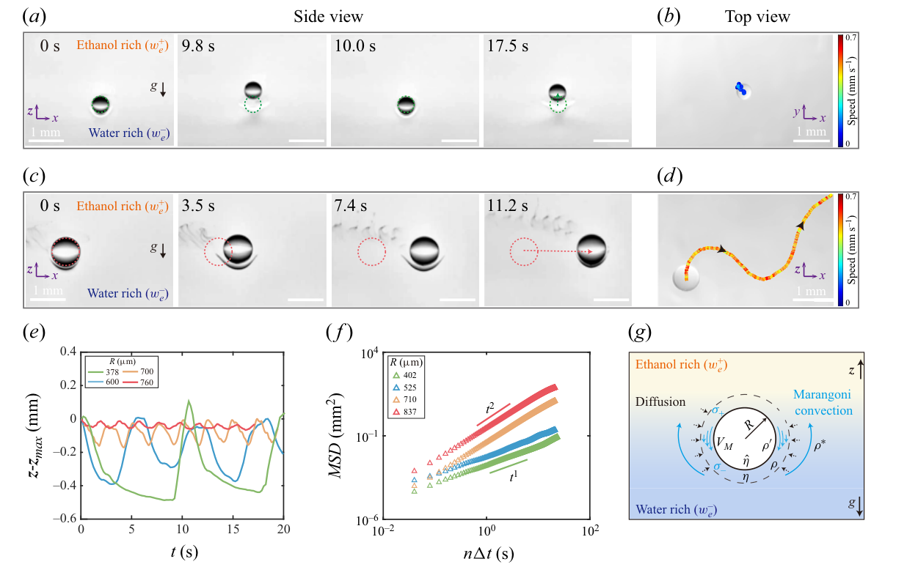

浓度分层中的硅油滴为什么会横向游动？
稳定乙醇–水分层中的液滴超过一定尺度后出现横向运动。实验和理论将其起点与轴对称 Marangoni 流的失稳相联系。
Lateral self-propulsion of Marangoni droplets in stratified fluids
研究背景
稳定密度分层会改变固体颗粒、气泡和液滴的升沉运动。对于可变形界面，浓度或温度梯度还会产生界面张力梯度，因而同时出现浮力、自然对流、Marangoni 对流和扩散。已有工作已经解释了分层液体中油滴的悬浮与周期性竖直弹跳，但对溶质 Marangoni 流、自然对流和分层共同作用下的横向运动研究很少。
作者提出的问题是：
- 何时从小液滴的弱、近似随机横向扰动转变为持续横向自推进？
- 临界液滴尺寸怎样依赖乙醇浓度梯度？
- 远离起始点时，横向速度由什么速度尺度控制？
- 横向自推进与竖直弹跳在参数空间中怎样共存？
研究对象为 10 cSt 硅油滴，半径约 400–800\ \mu\mathrm{m}，置于稳定乙醇-水质量分数梯度中。主实验梯度约为 dw_e/dz=0.16–0.28\ \mathrm{mm^{-1}}，另以 0.14\ \mathrm{mm^{-1}} 检查低驱动极限。
研究方法
分层液体的制备与标定
乙醇和去离子水先在 0.1 bar 下脱气 30 min，实验温度维持在 20\,^\circ\mathrm{C}。作者在装有 30 ml 乙醇的 50\times50\times50\ \mathrm{mm^3} 比色皿底部，以低于 2\ \mathrm{ml\,min^{-1}} 的速度注入 20 ml 水，形成连续过渡层。以 40 mg l^{-1} 亚甲蓝作为浓度指示剂，通过灰度-浓度标定得到 w_e(z)。亚甲蓝扩散系数 (0.67\pm0.13)\times10^{-9}\ \mathrm{m^2\,s^{-1}} 与乙醇在水中的量级接近，因此被用作扩散过程的代理。
图 1（方法/标定）：
- 回答如何生成和测量稳定浓度梯度。
- (a) 是由下向上注水的制备方案；(b) 是侧视/俯视成像光路；(c–e) 给出染料层演化、灰度标定以及 5–30 min 的浓度剖面。
- 关键证据是
w_e\approx10\%–90\%区间内剖面近似线性，30 min 内梯度变化估计小于0.01\ \mathrm{mm^{-1}}。 - 注意：染料仅是乙醇扩散的近似代理；注液期间不可避免的对流未被直接测量。
液滴实验与成像
梯度形成后静置 15 min，再用内径 0.178 mm 的微量移液管在梯度中心释放单个硅油滴；每次只放一个液滴，每个新试验重新制备梯度。侧视或俯视 CCD 以 30 fps 记录 30–180 s，直到液滴移出视场。液滴半径测量标准差为 2.8–4.7 \mu\mathrm{m}。
PIV 使用直径 2.5 \mu\mathrm{m}、浓度 0.2 mg ml^{-1} 的聚苯乙烯示踪粒子。作者明确指出：示踪粒子过少导致难以定量提取速度，浓度升高又会使粒子聚集于界面并抑制横向自推进。因此 PIV 主要提供流向和对称性证据，不是高精度速度场测量。
轨迹与速度定义
图 2（数据处理）：
- 说明作者采用单条轨迹内、对所有相同时间滞后进行平均的 time-averaged MSD：
MSD(n\Delta t)=\frac{1}{N-n}\sum_{i=1}^{N-n} \left|\mathbf r_{i+n}-\mathbf r_i\right|^2. - 小时间滞后拥有更多位移样本，长时间滞后统计量迅速减少，因此论文只展示到
N\Delta t/2。 - 这不是多液滴的 ensemble MSD；用它判断
t或t^2标度时，应注意同一轨迹中的位移样本并非相互独立。
瞬时速度定义为相邻采样位置的位移模除以时间间隔，最终横向速度 U 是这些速度模的时间平均。作者采用 4/30\ \mathrm{s} 的采样间隔以折中时间分辨率与定位噪声。该定义衡量“推进强度”，不直接衡量方向持续性，因此弯曲、螺旋和持续转向的轨迹也可得到较大的 U。
具体结果
1. 小液滴近似随机，大液滴出现持续横向推进

图 3（主要现象与物理背景）：
- 在
dw_e/dz=0.28\ \mathrm{mm^{-1}}下，小液滴约R=400\ \mu\mathrm{m}时发生明显竖直弹跳，但横向位移只有数百微米，MSD 近似\propto t。 - 大液滴约
R=800\ \mu\mathrm{m}时可横向移动数毫米，MSD 在约 50 s 内近似\propto t^2，作者据此区分持续自推进与“Brownian-like motion”。 - (g) 给出竖直 Marangoni 对流示意：液滴顶部接触富乙醇液体，油-液界面张力较低；底部贫乙醇、界面张力较高，沿界面形成向下的 Marangoni 流，对液滴产生向上作用。
- 小液滴的所谓 Brownian-like 有效扩散率约
10^{-8}\ \mathrm{m^2\,s^{-1}}，远大于同尺寸颗粒的热 Brownian 运动；这实质上是由弱 Marangoni 扰动放大的随机/非定向运动，不是热噪声主导的 Brownian 运动。
2. 浓度梯度决定弹跳与横移是否共存
图 4（主参数扫描）：
0.28\ \mathrm{mm^{-1}}：约400–800\ \mu\mathrm{m}的液滴均明显弹跳；大液滴同时横向推进。0.25和0.22\ \mathrm{mm^{-1}}：小液滴仍可弹跳，大液滴主要横向推进，竖直振幅很小或消失。0.19和0.16\ \mathrm{mm^{-1}}：小液滴悬浮，大液滴只横向推进而不弹跳。0.14\ \mathrm{mm^{-1}}：所有液滴在 5 min 内的横向位移小于约2R，未见明显自推进。- 图 4(e) 用 MSD 区分小液滴的近线性增长和大液滴的近二次增长；低梯度大液滴还可出现俯视下的螺旋路径。
- 图 4(f,g) 表明时间平均速度较稳定，且
U随R增大。不同轨迹的瞬时速度标准差约为 0.03–0.08 mm s^{-1}。
作者还观察到记录期间液滴半径近似不变，认为油滴向外相的质量传递可忽略；速度没有可测衰减，可能因为记录时间短且液滴不断进入未被扰动的新区域。
3. 横向运动的起始条件
作者定义
Ma=\frac{R V_M}{D},\qquad
V_M=-\frac{dw_e}{dz}\frac{d\sigma}{dw_e}
\,\frac{R}{2(\eta+\hat\eta)},
其中 V_M 是 Young 等人在无限扩散极限得到的理论 Marangoni 速度尺度。高 Ma 下，浓度扰动集中在界面边界层内；对流-扩散平衡给出
\delta\sim R\,Ma^{-1/2}.
横向微扰速度记为 \hat U。液滴移动一个边界层厚度的时间为 \tau_a\sim\delta/\hat U，扩散恢复前后对称的时间为 \tau_d\sim\delta^2/D。若 \tau_d>c_1\tau_a，扰动在被扩散抹平前会被放大。再用横向 Marangoni 力与 Stokes 阻力的量级平衡，作者得到
Ma>c_1,
以及
R_{\mathrm{crit}}
=\left[
\frac{2c_1D(\eta+\hat\eta)}
{-(d\sigma/dw_e)(dw_e/dz)}
\right]^{1/2}.
图 5（起始阈值）：
- 以五个浓度梯度下“有/无横向运动”的液滴半径绘制相图。
- 对较低的四个梯度拟合得到
R_{\mathrm{crit}}\propto (dw_e/dz)^{-0.45\pm0.11},与理论的-1/2指数相容。 0.28\ \mathrm{mm^{-1}}的数据不服从该标度，作者把原因归于大振幅竖直弹跳破坏了“忽略弹跳”的理论假设。
4. 远离起始点的横向速度
当 Pe=UR/D\gg1 时，上游边界层厚度 \delta_+\sim RPe^{-1/2}，下游边界层厚度 \delta_-\sim R。附录 D 的量级分析认为下游侧对横向法向力的贡献占主导，因而得到
U=c_2 V_M.
图 6（速度标度）：
- 对
dw_e/dz=0.16–0.25\ \mathrm{mm^{-1}}且无大振幅弹跳的数据，双对数拟合得到U\propto V_M^{1.11\pm0.23},与线性标度相容。 U/V_M随R有明显散点并略下降；数值量级约为10^{-3}，说明c_2并非O(1)，论文主要验证的是指数而非系数预测。- 高梯度以及部分存在大振幅弹跳的样本被排除，因而这一关系只适用于“远离起始、弹跳可忽略”的子集。
5. 弹跳与横向推进的统一相图
图 7（状态图）：
- 横轴为
Ra=-\frac{(d\rho/dz)gR^4}{\eta D},纵轴为Ma/Ra^{1/2}。 - 既有工作给出竖直弹跳阈值
Ma/Ra^{1/2}>275。 - 本文给出横向自推进阈值
Ma\gtrsim(1.3\pm0.2)\times10^5. - 两条阈值线把稳定悬浮、仅弹跳、弹跳并横移、仅横移四种状态放到同一图上。
- “仅横移”和“弹跳并横移”的数据区明显重叠，作者承认现有两个无量纲数不足以解释共存程度；可能需要第三参数或初始扰动信息。
关键机制
论文支持的机制链条可以写成：
- 竖直乙醇浓度梯度产生沿液滴界面的张力梯度，形成最初轴对称的 Marangoni 对流。
- 高
Ma使溶质对流强于扩散，浓度扰动被压缩进厚度\delta\sim RMa^{-1/2}的界面边界层。 - 若液滴受到任意微小横向扰动，边界层的前后/左右差异在扩散恢复对称前被对流保留下来并放大。
- 外部 PIV 显示一侧界面流更强；内部流场未见液滴整体旋转。作者据此判断，推进来自横向净 Marangoni 应力，而不是液滴滚动。
- 下游边界层的法向应力贡献在高
Pe下占主导，与 Stokes 阻力平衡后产生稳态U\propto V_M。
附录与图表补充
图 8（梯度验证）：
- 用浓度依赖扩散系数的一维 Fick 方程和 Crank–Nicolson 离散，比较 5、15、25 min 的实验/模拟浓度剖面。
- 验证过渡层在主要浓度区间保持近似线性，但模拟假定初始尖锐界面和纯扩散，不能重现注水阶段的对流。
图 9（低梯度终止）：
dw_e/dz=0.14\ \mathrm{mm^{-1}}时，5 min 内横向位移小于2R，支持“驱动太弱、无明显自推进”的分类。- 这同时暴露了分类判据较经验化：主文没有给出一个独立于观测时长的统计阈值。
图 10（速度对半径的归一化）：
U/R在 0.16 和 0.22 mm^{-1}下对R没有明显依赖；0.28 mm^{-1}下略增。- 支持图 4 中
U\sim R的近似，但散点较大。
图 11（物性输入）：
- 汇总乙醇质量分数变化下的密度、动力黏度、乙醇扩散系数以及 10 cSt 硅油-乙醇水界面张力。
- 这些物性用于附录 F 中
V_M、Ma和Ra的估算。 - 局部
w_e不是逐滴直接测量，而是以R\ge800\ \mu\mathrm{m}液滴所在高度取w_{e0}=0.4，再用实验拟合的dz/dR=1.67推算；物性与位置误差没有完整传播到无量纲数。
适用范围与局限
- 起始理论是量级分析。
Ma_{\mathrm{crit}}中的常数由实验状态边界确定，不是从完整特征值问题预测；0.28\ \mathrm{mm^{-1}}的系统性偏离说明竖直弹跳与横向失稳发生强耦合。 - PIV 主要是定性证据。 示踪浓度受到“太少无法定量、太多改变界面”的限制，论文没有给出高分辨率浓度场和应力场。
- MSD 与速度统计有限。 MSD 来自单轨迹时间平均；长滞后统计量少。速度采用位移模，不能区分直线推进、螺旋运动与高频抖动。文中也未明确汇总独立重复数。
- 局部物性依赖间接估算。 液滴处的乙醇质量分数由高度-半径关系推断，再映射到
D,\eta,\sigma，但没有完整的不确定度传播。 - 速度标度只验证指数。
1.11\pm0.23与 1 相容，但置信区间较宽、U/V_M散点明显，并排除了强弹跳数据。 - 状态图仍有未解重叠。 仅横移与弹跳并横移不能被
Ma和Ra唯一分开；作者提出第三无量纲参数、初始横向/竖直扰动及直接数值模拟作为后续方向。 - 外推范围有限。 实验只使用一种 10 cSt 硅油、一类乙醇-水分层和有限容器；“可推广到温度/表面活性剂梯度及生物系统”目前是物理类比，不是本文直接验证。